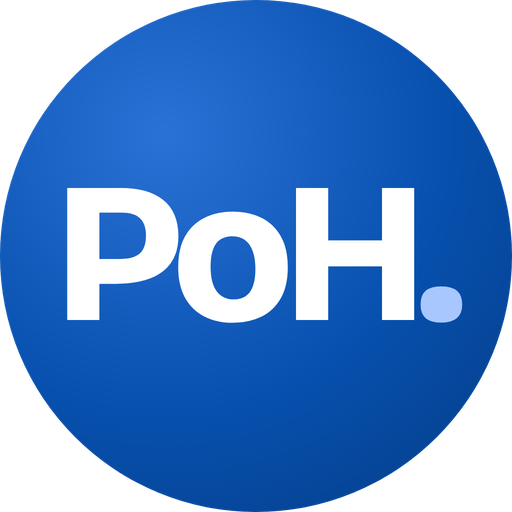
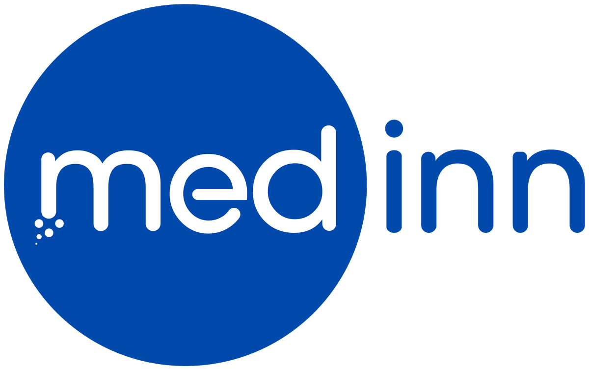
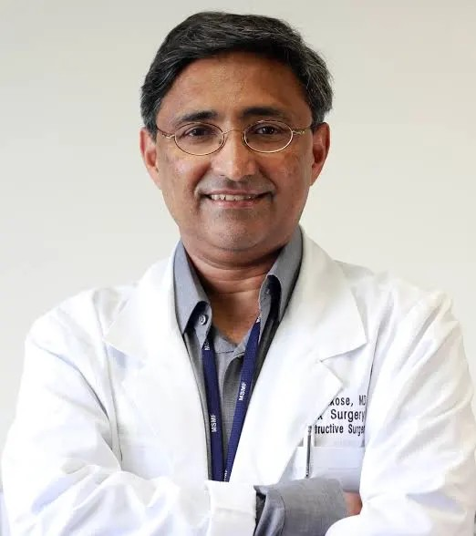

A Medinn initiative · Kerala
Connecting with the MVPs of healthcare and MedTech in Kerala.
This week: a conversation on cancer care with Dr. Moni Abraham Kuriakose, Karkinos Healthcare.
The initiative
People of Healthcare is how Medinn is connecting with 50 of the people building and leading healthcare and MedTech in Kerala.
Understand the challenges they face, and the bridges that need to be built.
To widen adoption and collaboration between startups, clinicians and hospitals.
Conversations first. Every feature is shared with the person for approval before it goes out.
This feature · MVP

Medical Director, Karkinos Healthcare
Why it matters
About 170 per lakh people, against about 110 nationally, the highest rate in the country.
Source: Lok Sabha reply, 5 Dec 2025, as reported by The Week (17 Dec 2025); ICMR-NCRP estimates.
The model
Karkinos calls it distributed cancer care: one platform from screening and diagnosis to treatment and follow-up, taking care out of the four walls of the hospital. A comprehensive cancer centre is the vision at the heart of the network. He says it has served about 3 million patients.
Bottleneck and bridges
Large cancer centres were slow to adopt standardised care, and have little incentive to send patients back to community clinics for follow-up closer to home.
Digital health in primary health clinics.
ABDM adoption in hospitals, so a patient's records move with them.
More digital adoption. AI helping democratise quality cancer care.
The ask
Nominate them. Or tell us your own story. We would like to feature it, and help build the bridges between people who should be working together.